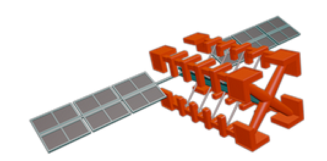
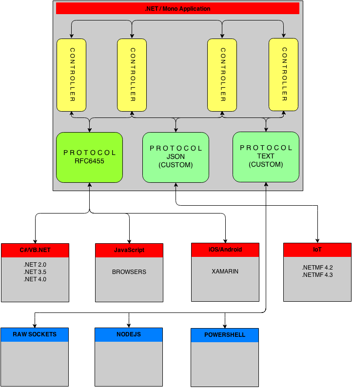
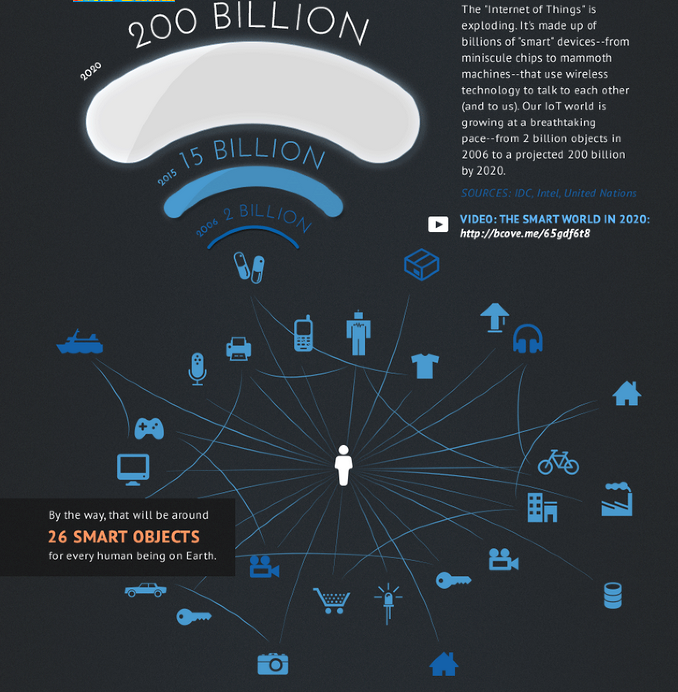

Go real-time
with
"Internet of Things"

RealTime communication and IoT walks hand in hand
Uffe Bjorklund - @ulfbjo
About Me
In RealTimeWeb since 2009.
Web (mostly backend, and you will see why)
Kinect, Arduino, Netduino, RaspberryPI, AR Drone etc
P2P (like WebRTC)
M2M
...Full-Duplex communication in general...
Todays agenda
Intro to "realtime" development
Show that state is important
Communicate cross-protocol
Add "things" to the mix
HTTP/REST/AJAX
Designed for delivering resources (HTML, JS, CSS)
Half-Duplex (stateless)
~870 bytes average header
Why is "RealTime" important
Well...
Event driven architecture
Should decrease complexity
Will increase speed
But...
A client should never (or rarely) ask for data
You should never send data to a client that does not need it
So...
Simple
Fast
Saves resources
RealTime Frameworks
NodeJS/Socket.io
XSockets.NET
SignalR
Pusher *
Fleck
Realtime.co *
PubNub *
Tornado
Kaazing **
Firebase *
Autobahn
* SaaS
** SaaS and SelfHosted
Communication Patterns
Framework Capabilities
The most imporant parts (IMO) of a "real-time" framework?
Modular architecture
So that functionality can be overriden/added in a smooth way
State
So that we get control over where messages are sent
Cross-Protocol Communication
So that we can connect things/systems regardles of protocol
But also...
Scaling
Security
Etc...
How it works... kind of...

<CODE/>
Code availbale at: https://github.com/codeplanner/NDC-InternetOfThingsDay-2014-11-06
Why should I care about IoT?

Today there is ~300.000 developers in IoT. By 2020 that number is expected ot be ~4.500.000.
An annual growth by 57 %
Thank You!
Questions?
Uffe Bjorklund
email: uffe@xsockets.net
twitter: @ulfbjo
Sources/Credits
IoT statistics 1: Intel
IoT statistics 2: ReadWrite.com
Image of "Communication Patterns" by Phil Leggetter
Graphs by Wijmo
Game by html5quintus
Code samples by XSockets.NET
MissileSharp by Christian Specht
SharpDX by Alexandre Mutel
RevealJS by Hakim El Hattab